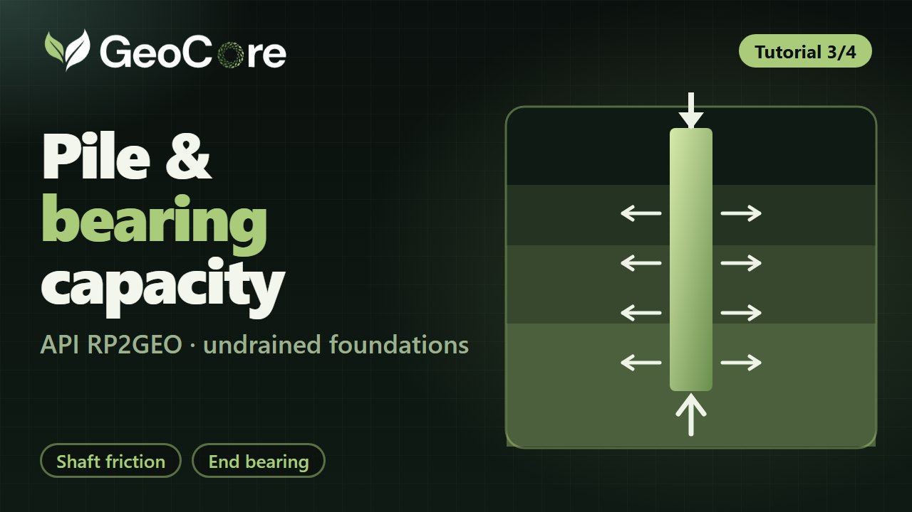

Loads from YouTube (youtube-nocookie.com) when you press play.
Tutorial 3 of 4 2:45
Pile capacity and bearing
API RP2GEO unit shaft friction and end bearing for piles, then undrained shallow-foundation capacity.
What you will do
- Unit skin friction (sand)
- Unit end bearing (sand)
- Undrained vertical capacity